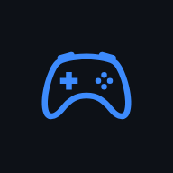

GAMEFLEX · ANDROID TV
Connecter votre serveur
Connectez votre Raspberry Pi, NAS ou PC GameFlex pour retrouver sa bibliothèque et ses émulateurs.

Connectez votre Raspberry Pi, NAS ou PC GameFlex pour retrouver sa bibliothèque et ses émulateurs.